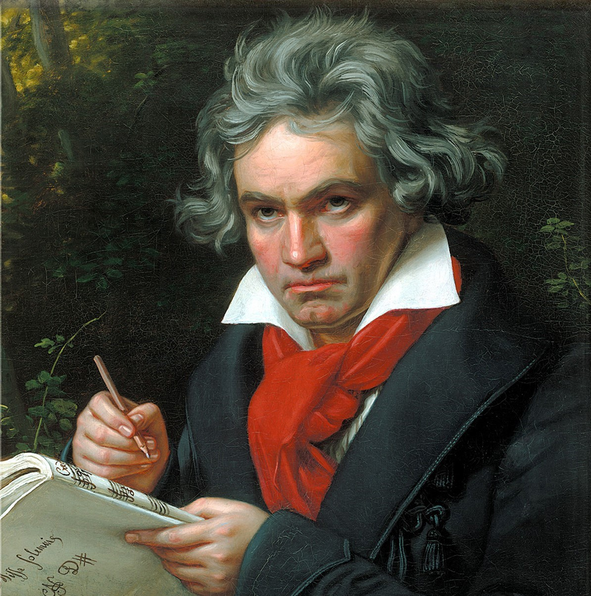
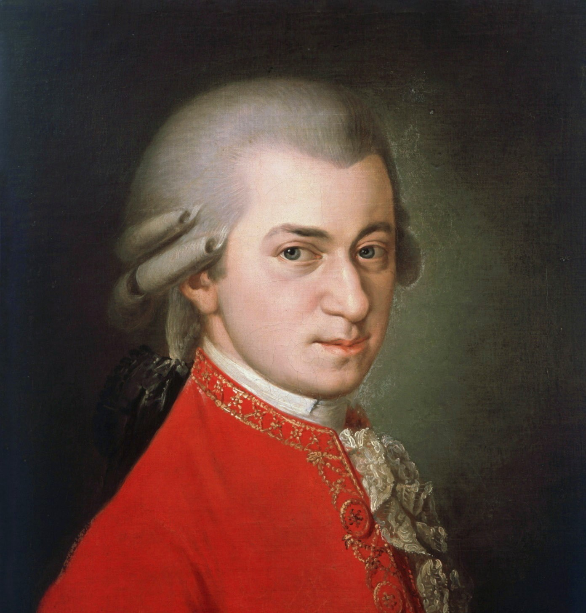

Perdigon or Perdigo (fl. 1190–1220) was a troubadour from Lespéron,diocese of Gévaudan (actually in the department of Ardèche next to modern Lozère).Fourteen of his works survive, including three cansos with melodies.He was respected and admired by contemporaries, judging by the widespread inclusion of his work in chansonniers and in citations by other troubadours.
Perdigon's music
Biography
Though his biography is made confounding by contradicting statements in his vida and allusions in his and others' poems, Perdigon's status as a jongleur from youth and an accomplished fiddler is well-attested in contemporary works (by him and others) and manuscript illustrations depicting him with his fiddle.Perdigon travelled widely and was patronised by Dalfi d'Alvernha, the Baux,Peter II of Aragon, and Barral of Marseille.[2] His service to the latter provides an early definite date for his career, as Barral died in 1192 and Perdigon composed a canso—which survives with music—for him.
According to his vida, Perdigon was the son of a poor fisherman who excelled through his "wit and inventiveness" to honour and fame, was clothed and eventually armed, knighted, and granted land and rent by Dalfi d'Alvernha.After this period of his life, which is said to have lasted a long time, the manuscripts of his vida diverge. According to one version, death deprived him of his friends, male and female, and so he lost his position and entered a Cistercian monastery, where he died.That he entered a Cistercian monastery has never been proven, but has received some support from two of his works.
According to another version of his vida, he became a strong opponent of Catharism -an anti-Catholic sect- and supported the Albigensian Crusade.He is said to have accompanied Guillem des Baux, Folquet de Marselha, and the Abbot of Cîteaux to Rome to oppose Raymond VI of Toulouse after the latter's excommunication in 1208. The author of the vida blames Perdigon for "[bringing] about and [arranging] all these deeds."The biographer further claims that Perdigon sang to the populace to encourage the Crusade and even boasted of humiliating Peter II of Aragon who opposed the Crusades and died at the Battle of Muret fighting against the Crusaders.For this reason he became despised by those in favor of Catharism, and due to the war lost all his friends who fought in it: Simon de Montfort, Guillem des Baux,and many others. In the end, the son of Dalfi d'Alvernha, abandoned him, confiscated his land, and sent him away. The biographer claims that he went to Lambert de Monteil and begged to be entered into the Cistercian monastery of "Silvabela", but the author incorrectly believes Lambert to be the son-in-law of Guillem des Baux, and the monastery Silvabela ("beautiful forest") never existed.His vidas are questionable.

Beethoven
Biography
Ludwig van Beethoven; baptised 17 December 1770 – 26 March 1827) was a German composer and pianist. Beethoven remains one of the most admired composers in the history of Western music; his works rank amongst the most performed of the classical music repertoire and span the transition from the Classical period to the Romantic era in classical music. His career has conventionally been divided into early, middle, and late periods. The "early" period, during which he forged his craft, is typically considered to have lasted until 1802. From 1802 to around 1812, his "middle" period showed an individual development from the "classical" styles of Joseph Haydn and Wolfgang Amadeus Mozart, and is sometimes characterized as "heroic". During this time, he began to suffer increasingly from deafness. In his "late" period from 1812 to his death in 1827, he extended his innovations in musical form and expression.
Beethoven's best music
life story
Born in Bonn, Beethoven's musical talent was obvious at an early age, and he was initially harshly and intensively taught by his father Johann van Beethoven. Beethoven was later taught by the composer and conductor Christian Gottlob Neefe, under whose tutelage he published his first work, a set of keyboard variations, in 1783. He found relief from a dysfunctional home life with the family of Helene von Breuning, whose children he loved, befriended, and taught piano. At age 21, he moved to Vienna, which subsequently became his base, and studied composition with Haydn. Beethoven then gained a reputation as a virtuoso pianist, and he was soon patronized by Karl Alois, Prince Lichnowsky for compositions, which resulted in his three Opus 1 piano trios (the earliest works to which he accorded an opus number) in 1795.
His first major orchestral work, the First Symphony, premiered in 1800, and his first set of string quartets was published in 1801. Despite his hearing deteriorating during this period, he continued to conduct, premiering his Third and Fifth Symphonies in 1804 and 1808, respectively. His Violin Concerto appeared in 1806. His last piano concerto (No. 5, Op. 73, known as the 'Emperor'), dedicated to his frequent patron Archduke Rudolf of Austria, was premiered in 1811, without Beethoven as soloist. He was almost completely deaf by 1814, and he then gave up performing and appearing in public. He described his problems with health and his unfulfilled personal life in two letters, his "Heiligenstadt Testament" (1802) to his brothers and his unsent love letter to an unknown "Immortal Beloved" (1812).
After 1810, increasingly less socially involved, Beethoven composed many of his most admired works, including later symphonies, mature chamber music and the late piano sonatas. His only opera, Fidelio, first performed in 1805, was revised to its final version in 1814. He composed Missa solemnis between 1819 and 1823 and his final Symphony, No. 9, one of the first examples of a choral symphony, between 1822 and 1824. Written in his last years, his late string quartets, including the Grosse Fuge, of 1825–1826 are among his final achievements. After some months of bedridden illness, he died in 1827. Beethoven's works remain mainstays of the classical music repertoire.

Mozart
Mozart's music and story
Music Style
Mozart's music, like Haydn's, stands as an archetype of the Classical style. At the time he began composing, European music was dominated by the style galant, a reaction against the highly evolved intricacy of the Baroque. Progressively, and in large part at the hands of Mozart himself, the contrapuntal complexities of the late Baroque emerged once more, moderated and disciplined by new forms, and adapted to a new aesthetic and social milieu. Mozart was a versatile composer, and wrote in every major genre, including symphony, opera, the solo concerto, chamber music including string quartet and string quintet, and the piano sonata. These forms were not new, but Mozart advanced their technical sophistication and emotional reach. He almost single-handedly developed and popularized the Classical piano concerto. He wrote a great deal of religious music, including large-scale masses, as well as dances, divertimenti, serenades, and other forms of light entertainment.
Alan Walker
Alan Walker's electronic music
Early life
Alan Olav Walker was born on 24 August 1997 in Northampton, England to Anglo-Scottish British Philip Alan Walker, and his Norwegian wife Hilde Omdal Walker. As a result, by his international parental inheritance, he was granted dual citizenship from both the United Kingdom and Norway.He grew up with two siblings, an elder sister named Camilla, who was also born in England; and a younger brother named Andreas, who was born in Norway. At the age of two, along with his family, he moved to Bergen, Norway.Walker later found interest in computers, a hobby which has driven him deeper to computing graphical design, and musical programming. He initially had no musical background, but was able to teach himself by watching YouTube tutorials based on musical production.
Achievement
The 18-year old, Norwegian producer Alan Walker has emerged on the global music scene as one of the most successful artists of 2016. His record-breaking single “Faded” was released on December 4th, 2015, and has today reached 3.8 million sold units worldwide and the music video has 310 million views on YouTube. It topped the singles chart in 10 countries across Europe and reached the top 10 in UK, #2 in Australia, and has recently entered Billboard Hot 100 in the US. It was #1 on the Global Shazam chart for 7 consecutive weeks and #1 on the European Radio chart for 6 consecutive weeks. Alan’s summer tour has already taken off, with multiple stops at major festivals throughout Europe.
 (1).jpg)